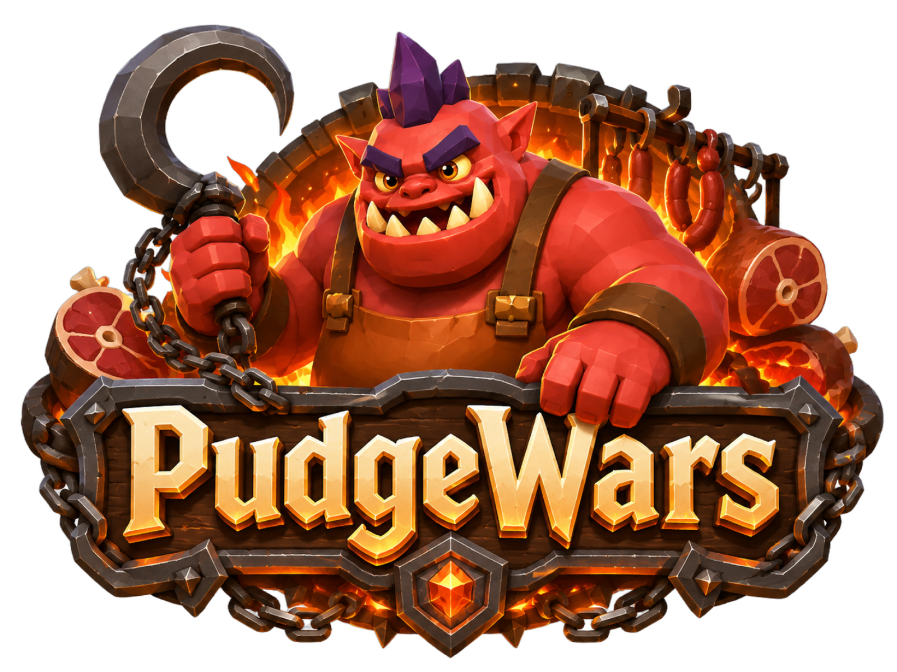

Take the lead
The standard hosted match is 3v3, first to 30 team kills, with a 20-minute limit. A hosted 1v1 duel uses 10 kills and an 8-minute limit.
Hook arena · Team combat · River control
Land hooks across the river, rescue allies, and upgrade your butcher in a race to the team kill goal.
Learn the game ↓
Two teams of butchers face each other across a river. Catch an enemy with Meat Hook, pull them into danger, and finish the fight together. Rescue teammates with the same hook, dodge incoming throws, and turn kills into upgrades.
The standard hosted match is 3v3, first to 30 team kills, with a 20-minute limit. A hosted 1v1 duel uses 10 kills and an 8-minute limit.
The river deals 30 damage every half-second. Blink cannot cross directly from one bank to the other; river landings are possible but dangerous.
Respawn after 4 seconds. The 2-second spawn shield ends early when you walk, hook, or attack. Your own fountain heals you while you idle on its pad.
| Ability | Base numbers | What it does |
|---|---|---|
| Meat Hook | 200 damage · 60-tile range · about 2.03 s cooldown | Wind up for about 0.28 s, then throw and reel in the first valid catch. Hooking a teammate heals them for 120. |
| Melee attack | 28 damage · about 0.59 s between attacks | Finish enemies pulled into close range. |
| Grapple | 20-tile range · 6 s cooldown | Latch onto terrain and pull yourself toward it. Does no damage. |
| Rot | 24 damage every 0.5 s · 8-tile radius · 40% slow | Toggle a cloud that damages everyone inside, including yourself. It can kill you. |
| Blink | Up to 20 tiles · 8 s cooldown | Hop toward a target. Cliffs, walls, and bodies can shorten the hop; a direct bank-to-bank crossing is disallowed. |
| Feature | Rule |
|---|---|
| Starting health | 840 HP, with 35 additional maximum HP per level. |
| Home fountain | Recover 2% of maximum HP every half-second while idling on your own spawn pad. |
| Island fountain | Recover 1.5% of maximum HP per second within 16 tiles of the central island fountain. |
| River damage | Lose 30 HP every half-second while drowning. |
| Fog of war | Your own bank and the river are visible. Living allies and wards reveal nearby enemy-bank positions within 20 tiles. |
| Self-kill with Rot | The other team gains a kill toward its goal; nobody receives the personal kill, upgrade point, or gold bounty. |
An enemy kill earns the killer one upgrade point. Spend one point for one rank; each of the four hook upgrades caps at rank 10. Shop gold is a separate resource.
| Upgrade | Benefit |
|---|---|
| Damage | +15 enemy hook damage per rank, starting at 200. |
| Distance | +4 tiles of hook range per rank, starting at 60. |
| Speed | Faster hook flight and reeling. |
| Radius | +0.125 tiles of catch radius per rank, starting at 2.75. |
Enemy kills pay 3 base gold, with extra bounty for first blood, streaks, and shutdowns. A successful mid-air hook deflection pays 1 gold. Buy shop items while in range of your base shop.
A river rune appears every 20 seconds, beginning at 0:20. Location and kind follow a fixed cycle. Combat buffs last 15 seconds; Bounty pays immediately and does not replace your current combat buff.
| Rune | Effect |
|---|---|
| Haste | +40% movement speed. |
| Double Damage | Double hook damage. |
| Regeneration | Recover 3% of maximum HP every half-second. |
| Big Hook | +50% hook range, catch radius, and hook damage. |
| Lightning | Hook hit adds 120 splash damage within 8 tiles. |
| Bounty | Gain 4 gold immediately. |
| Item | Gold | Effect |
|---|---|---|
| Healing Flask | 5 | Instantly restore full health. |
| Haste | 4 | Apply the timed movement-speed buff. |
| Regeneration | 4 | Apply the timed regeneration buff. |
| Big Hook | 6 | Apply the timed hook-size and damage buff. |
| Double Damage | 8 | Apply the timed hook-damage buff. |
| River Treads | 10 | +8% movement speed per rank. |
| Longflight Brand | 12 | +1% hook damage per tile traveled, per rank. |
| Bank Palisade | 10 | Place a temporary wall with health on your bank. Higher ranks improve it. |
| Hooktrap | 10 | Place a hidden mine. Enemy hooks detonate it; allied hooks can grab it. |
| Farwatch Ward | 8 | Place a 45-second vision ward on either bank. Up to two wards per player. |
The five permanent item families each occupy one inventory slot. Buying a family again increases its rank, up to five. Flasks and timed buffs do not occupy those slots.
Hooks have a visible windup and travel time. Lead moving targets, vary your own movement, and use terrain to break easy lines.
An allied hook both repositions and heals. A rescue can deny an enemy kill and preserve your team’s pressure.
Damage helps secure kills, but range, radius, and speed change which catches you can land. Contest the predictable rune timer.
Rules reviewed on 29 September 2026. This guide describes the source version available on that date; match settings and older replays can differ.